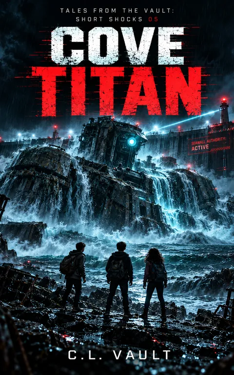

Cove Titan
Tales From the Vault: Short Shocks 5
The boy is missing. The city says he's due back.
Kindle Unlimited reader? Membership eligibility for individual books is shown on Amazon. The format links above are paid affiliate links.
Purchase links open Amazon. Format availability is taken from the public catalog record.
What is on file
THE BOY IS MISSING. THE CITY SAYS HE'S DUE BACK.
Twelve-year-old Eli Mercer has barely arrived in Harbor City when he discovers a missing-person flyer for a boy named Sam Hawthorne.
The flyer looks ordinary.
Until Eli notices the official stamp:
RETURN DUE: FEB 30, 1999.
Read the complete filed description
Then his phone begins displaying directions he never requested. The Coastal Safety Authority starts following him. And something enormous beneath the cove begins to stir.
With Nora, a brilliant young robotics enthusiast, Eli follows Sam's homemade clues to a hidden facility buried beneath the shoreline.
Inside waits the Twin Helm: two control seats connected to an ancient machine sleeping beneath the ocean.
ONE SEAT IS A TRAP. NEEDS TWO.
Sam may still be trapped inside.
And as the colossal Cove Titan begins to awaken, Harbor City's Coastal Safety Authority arrives with a shutdown key, a clipboard, and enough arrogance to file ownership papers on a buried god.
Because in Harbor City, everything has a classification.
Even things too enormous to control.
THE CITY HAS AUTHORITY. THE TITAN HAS OTHER PLANS.
Cove Titan is Book 5 of Tales From the Vault: Short Shocks, an interconnected series of darkly funny science-fiction horror stories about impossible technology, sinister systems, and children who refuse to be filed away.
Further material may surface.
No connected records are currently listed for this entry. Connections are added only when the archive can support them, and not merely because two stories share a city.
Request filing notices ↗